As part of the Commerce Data Usability Project, United States Patent and Trade Office (USPTO) in collaboration with the Commerce Data Service has created a tutorial that introduces Tableau as a way to explore USPTO data. If you have question, feel free to reach out to the Commerce Data Service at DataUsability@doc.gov.
foreword
The first patent in the United States was issued on July 31, 1790 to one Samuel Hopkins for an improvement in the making of pot ash, and was signed by President George Washington. That makes 225 years of innovators using the patent system to protect their ideas, from Samuel Morse's invention of Morse Code in 1840 through Arthur L. Shawlow and Charles H. Townes' invention of the laser in 1960, and Linus Yale's invention of the modern pin-tumbler lock in 1861 through John Bardeen and Walter H. Brattain's invention of the transistor in 1950. The years upon years of data relating to these innovations, as well as millions more, are all made publicly available by the USPTO. Some innovators choose not to protect their innovations with patents, perhaps choosing to maintain it as a trade secret or choosing not to protect it at all, but many do, and the resulting data is a fertile ground for analysis.
what does innovation look like in a given state?
Once you've lived in a state for a few years, you may already have some sense of what the innovation in that state looks like. For California, it's technology. For Alaska, you might (correctly) guess it has to do with drilling on the North Slope. But if you live in a state that isn't so dominated by a major corporation or industry, it might be much less obvious what kind of innovation is happening around you. Among the data the United States Patent and Trademark Office (USPTO) provides, the Patent Trademark Monitoring Team (PTMT) produces aggregations of the underlying patent data, along many different dimensions and partitions. These aggregations answer all kinds of questions just like this, as well as offering a convenient input for data visualizations.
technology classes by state
The visualization below serves as a detail view of the technology classes that make up a state's utility patents. The treemap organizes all of a state's technology classes for a given timeframe, with a rectangle's size representing its share of the patent total, while the line graph depicts the per year values for a given technology class if a rectangle is hovered over, and all classes for the state otherwise. We can pick which state we're looking at by using the dropdownbox on the right.

Case example: Idaho
Let's take a look at Idaho. As some background, Idaho is a big patent producer, driven primarily by Micron Technology, Inc. So, we see that Idaho's largest technology classes for 1995 - 2014 are:
- 'Semiconductor Device Manufacturing: Process' (with 21.99%),
- 'Active Solid-State Devices (e.g., Transistors, Solid-State Diodes)' (with 13.95%)
- 'Static Information Storage and Retrieval' (with 9.99%)
Unsurprisingly, given that the large share of Idaho's patent production is through Micron (a technology company), the largest technology classes involve computers. Vermont has a similar breakdown of technology classes, by way of IBM.
Other states are similarly dominated by a particular technology class (or kind of technology classes). Michigan's largest technology class since 2008, for example, is 'DP: Vehicles, Navigation, and Relative Location (Data Processing)' (technology class 701). Given Michigan's traditional status as the locus of the USA's auto-making industry, looking at the last 20 years (1995-2014), we can see that the second largest technology class is technically Internal-Combustion Engines (technology class 123), but this class stays relatively constant year-over-year, while technology class 701 increases significantly, starting in 2008, corresponding with the automotive industry bailout. This may point to a new, deliberate R&D focus in the industry following the injection of funds. Gas prices drove many consumers to purchase more fuel-efficient vehicles, such as Japanese-made models. Perhaps the US automotive industry decided to differentiate their competitive offerings using services based on GPS, rather than trying to play catch-up with fuel efficiency.
These detail views not only give us a good sense of what industry in a particular state looks like (Oklahoma's largest technology class, for example, is 'Wells (shafts or deep borings in the earth, e.g., for oil and gas)'), but can also help us understand trends within an industry if that industry is very specifically associated with a particular state. The automotive industry in Michigan is one of the clearest examples, but perhaps we could do a similar (though necessarily more subtle) analysis of Silicon Valley. California is not dominated by a single technology class, but many of their top technology classes are computer-oriented. Which technology classes are rising, and which are falling?

On the fly analysis
Designing data visualizations can sometimes be rather easy. If you're answering a specific question about inherently important data (such as sales and profit figures for a company you work for), any functional visualization of that data will be more or less successful. You can plan out the visualization from the beginning and develop by that blueprint. If you're instead digging into data to discover patterns or trends, you won't really know what the pattern looks like until you find it, and any upfront design may be a waste of time. With drag-and-drop tools, Tableau makes developing visualizations quick and easy. In this way, you can use Tableau as a tool for exploring your data dynamically, restructuring bar graphs into line graphs and bringing in new data points in a single mouse stroke. The above visualization, which leverages the exact same data from the prior state details visualization, was created in a few leisurely minutes.
This simple vis offers a detail view for a given technology class instead of a given state, offering us a comparative view of states by USPC class. We can now see, for example, that California consistently dominates the Locks USPC class (070) across all time ranges, whereas Illinois and New York are the top historical contributors to Printing (101), though California catches up for the range 2005-2014. What does the history of innovation in printing look like? Why is Illinois so significant, and why is California so dominant today? Why is New Hampshire a strong second over the last ten years, when it barely featured from 1963-1972? These kinds of questions lead to discovery. If we can identify the right way to peer into our data, and the right variables to make configurable, we can use Tableau as an elegant query system that shows these changes quickly and clearly, and lets us focus on the Why behind the What.
conclusion
We've shown here two visualization possibilities for a single set of data. Not only are there many more possibilities for this data set (such as a focused view on a specific technology class or state), but many more aggregations available at the PTMT data site, and that many more possibilities for joining USPTO data to other data sources. We could use Census population estimates by year to calculate patents per capita. We could pull in yearly state GDP data and see how it correlates with patent totals. We could observe the patent totals for a given corporation against its economic measures (such as revenue or earnings per share). To lightly spin the old cliché, the possibilities are infinite, and Python, Beautiful Soup and Tableau make the creation process painless.
Getting Started
In this tutorial, we'll go over how to collate the required data from the PTMT web site using Python web scraping, then walk through creating the visualization in Tableau Public. Follow along in the Jupyter Notebook below or check out the code files at Github.
Scraping USPTO tables
The data for this visualization lives in 51 different HTML tables (50 states + Washington DC), each on a separate page. We could copy and paste each table into an Excel or LibreOffice spreadsheet, unpivot the tables and export to a CSV format, but that doesn't scale well, and worse, it's boring. Let's write a script!
Importing necessary packages
We first import the necessary packages. For this script we use the collections, csv, requests, and Beautiful Soup to:
- Access the url where the different tables are stored,
- Parse and scrape the resulting page,
- Create a named tuple,
- Write to a CSV file
from collections import namedtuple
import csv
import requests
from bs4 import BeautifulSoupDeclaring initial variables
We now declare the variables that will be needed when we scrape USPTO.
- A dictionary with the full state name to state abbreviation key-value pair,
- the prefix and suffix url to the HTML tables,
- the empty list to store scraped values,
- and the named tuple function to pull the values from the scraped HTML.
# US state codes; add territory codes here if desired
REGION_CODES = {
'Alabama' : 'AL',
'Alaska' : 'AK',
'Arizona' : 'AZ',
'Arkansas' : 'AR',
'California' : 'CA',
'Colorado' : 'CO',
'Connecticut' : 'CT',
'Delaware' : 'DE',
'District of Columbia' : 'DC',
'Florida' : 'FL',
'Georgia' : 'GA',
'Hawaii' : 'HI',
'Idaho' : 'ID',
'Illinois' : 'IL',
'Indiana' : 'IN',
'Iowa' : 'IA',
'Kansas' : 'KS',
'Kentucky' : 'KY',
'Louisiana' : 'LA',
'Maine' : 'ME',
'Maryland' : 'MD',
'Massachusetts' : 'MA',
'Michigan' : 'MI',
'Minnesota' : 'MN',
'Mississippi' : 'MS',
'Missouri' : 'MO',
'Montana' : 'MT',
'Nebraska' : 'NE',
'Nevada' : 'NV',
'New Hampshire' : 'NH',
'New Jersey' : 'NJ',
'New Mexico' : 'NM',
'New York' : 'NY',
'North Carolina' : 'NC',
'North Dakota' : 'ND',
'Ohio' : 'OH',
'Oklahoma' : 'OK',
'Oregon' : 'OR',
'Pennsylvania' : 'PA',
'Rhode Island' : 'RI',
'South Carolina' : 'SC',
'South Dakota' : 'SD',
'Tennessee' : 'TN',
'Texas' : 'TX',
'Utah' : 'UT',
'Vermont' : 'VT',
'Virginia' : 'VA',
'Washington' : 'WA',
'West Virginia' : 'WV',
'Wisconsin' : 'WI',
'Wyoming' : 'WY'
}
BASE_URL_PREFIX = 'http://www.uspto.gov/web/offices/ac/ido/oeip/taf/stcteca/'
BASE_URL_SUFFIX = 'stcl_gd.htm'
MASTER_LIST = []
StateRow = namedtuple('StateRow', 'state_name tech_code year value')Scraping each state
We now can loop through each state abbreviation and build the actual url for each table. We then pass that url path to requests and parse through Beautiful Soup. From that parsed result, we search for a HTML table tag and pull values using our named tuple function. We store that result in our final MASTER_LIST.
# for each state code, generate the target URL and pull the data
for state in sorted(REGION_CODES):
print('Processing data for ' + state)
path = BASE_URL_PREFIX + REGION_CODES[state].lower() + BASE_URL_SUFFIX
r = requests.get(path)
soup = BeautifulSoup(r.text, "html.parser")
# skip first and last rows, which are headers and totals respectively
for table_row in soup.find_all('tr')[1:-1]:
tech_code = table_row.find('td', style=' text-align: left; ').string.strip()
year = 1963
# skip the last element, which is a total; we can aggregate the data ourselves
for value in table_row.find_all('td', {'style': None})[:-1]:
row = StateRow(state, tech_code, year, value.string.strip())
MASTER_LIST.append(row)
year = year + 1Scraping Tech Codes and Names
We now have to scrape the associated classifications with their code values from the USPTO site.
Declaring initial variables
We declare the following prior to scraping the site:
- URL to the Tech code table,
- final list to store the data,
- and named tuple function to pull the necessary data.
URL = 'http://www.uspto.gov/web/patents/classification/selectnumwithtitle.htm'
TECH_CODES = []
ClassRow = namedtuple('ClassRow', 'class_code class_name')Scraping Tech Code Table
We pass the URL we defined to requests and parse through Beautiful Soup. We now loop through HTML table tags and pull values based on our named tuple function.
REQUEST = requests.get(URL)
SOUP = BeautifulSoup(REQUEST.text, "html.parser")
print('Scraping data')
for table_row in SOUP.find_all('tr'):
class_code_tag = table_row.find('td', width='27')
# not a class_code + name row. skip
if class_code_tag is None:
continue
class_code = class_code_tag.string
class_name = table_row.find('td', width='532').string
TECH_CODES.append(ClassRow(class_code, class_name))Exporting to CSV
We open the file, state_tech.csv and tech_code.csv, for writing and:
- output the column names for the CSV as the first row,
- and write each iteration of our final list as another row.
# write out to csv
with open('./state_tech.csv', 'w', newline='') as out:
print('Writing data to ' + out.name)
CSV_FILE = csv.writer(out, delimiter=',')
CSV_FILE.writerow(['Region', 'Tech Class Code', 'Year', 'Utility Patent Count'])
CSV_FILE.writerows(MASTER_LIST)
with open('./tech_code.csv', 'w', newline='') as out:
print('Writing data to ' + out.name)
CSV_FILE = csv.writer(out, delimiter=',')
CSV_FILE.writerow(['Class Code', 'Class Name'])
CSV_FILE.writerows(TECH_CODES)Creating Visualizations
Now that we have our data in a clean, normalized format, let's make the visualization! We use Tableau Public, an interactive visualization platform that can publish to a public profile. Once it's published, you'll be able to browse and interact with your visualization on your Tableau Public profile web site, as well as embed that visualization in other web pages. First, install Tableau Public. Tableau requires an email to obtain the app. Once that's done, sign up for a free Tableau Public profile. Now let's load up Tableau Public.
Below we show how to create the embedded visualizations with Tableau Public. We highlight points of interest in red for clarity.
Connecting to our CSV
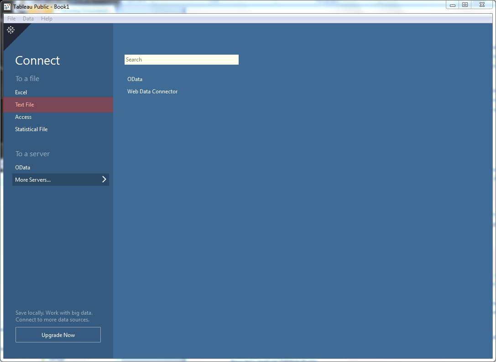First, we need to connect to our data. Select 'Text File' on the left side of the screen, under 'Connect.' In the dialog box that opens, navigate to state_tech.csv file we just created and click Open.
Data Joining
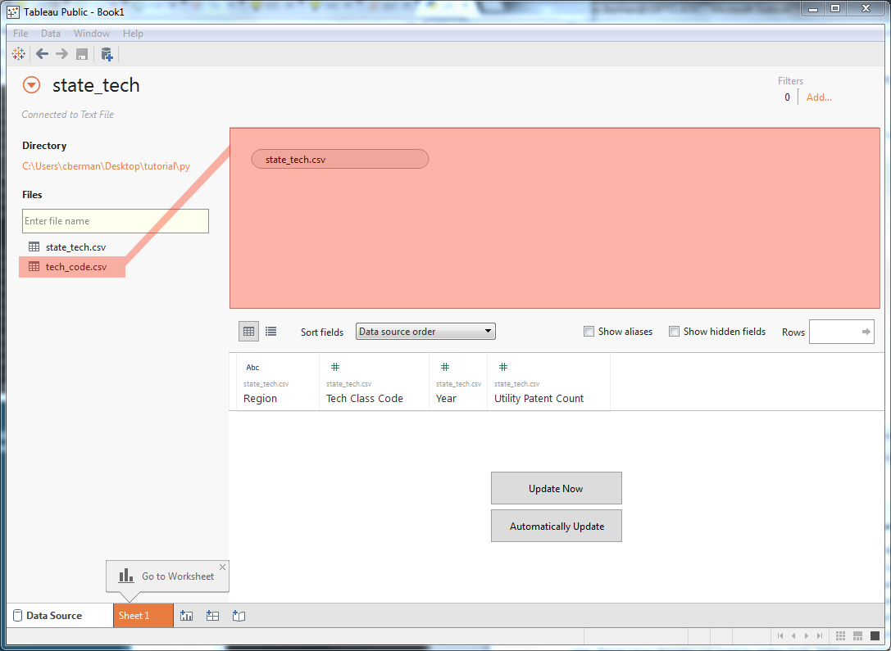Here, we see that Tableau has linked to the state_tech.csv file we generated. Our data sources for this visualization will be our state_tech.csv file joined to our tech_code.csv file (to supply the name for the technology class). On the left, Tableau lists available text files in the current working directory, and on the top, Tableau shows which sources are currently driving the visualization. So first, we need to join our state_tech.csv file onto our tech_code.csv file. Drag the tech_code.csv entry from the left section (under 'Files') onto the top section. Tableau's Join dialog pops up:
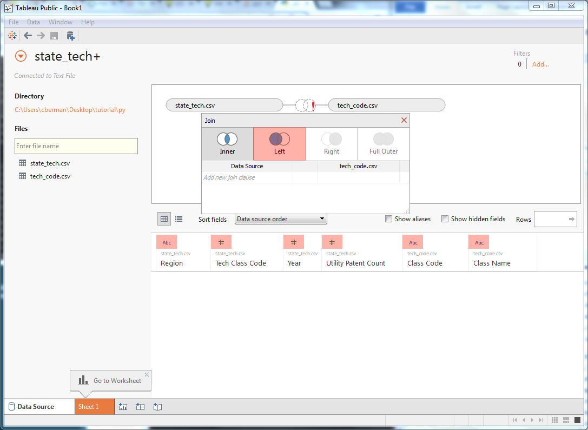In this case, we want a Left Join, using the 'Tech Class Code' field in state_tech.csv and the 'Class Code' field in tech_code.csv. At first, this won't work. Tableau supports some extract and load functionality, and will try to infer the data types of the loaded columns. In this case, Tableau infers that the 'Class Code' field in tech_code.csv is a text field, whereas the 'Tech Class Code' is a numeric field, which prevents our Join. In fact, there's multiple changes we need to make. First, Tableau supports many Geographical data types, so we'll want to change Region to Geographic Role -> State/Province. Next, change the data type of 'Tech Class Code' to String. (NOTE: To change data types, click the symbol above a given column header (such as 'Abc' or '#')). Once the data types are consistent, the join should work. Click the 'Automatically Update' button to see the joined data.
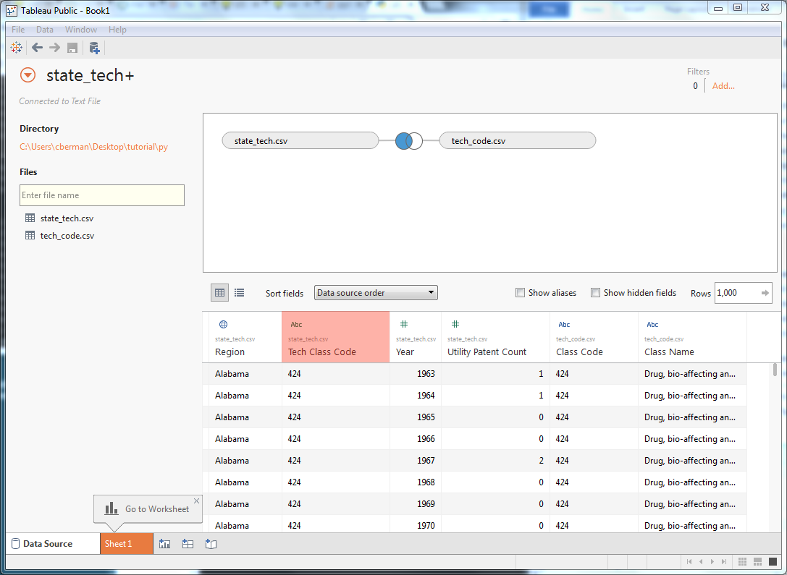Looking good! Just one more fix: We currently have two columns for class code, but we only need one. Let's hide the first one (the second column): mouseover the column header and click the arrow in the upper right corner of the header, then select Hide.
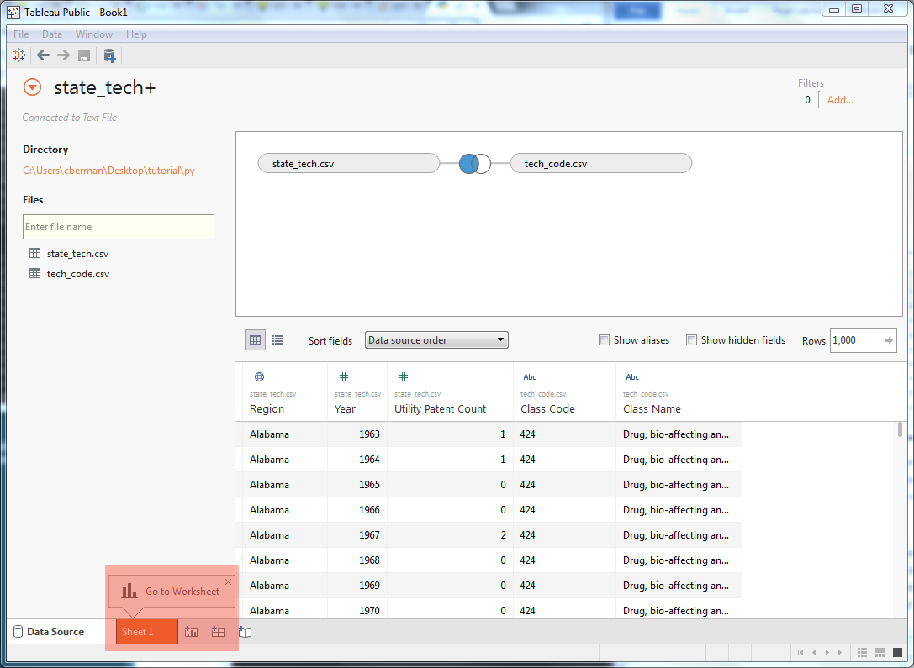With that done, let's start putting together our visualization. Select the orange button at the bottom of the page for Sheet 1. This brings us to the worksheet view for Sheet 1. Tableau uses worksheets to represent a single component of a dashboard, which may include many worksheets. For the purposes of this tutorial, we're treating 'dashboard' as synonymous with 'visualization.'
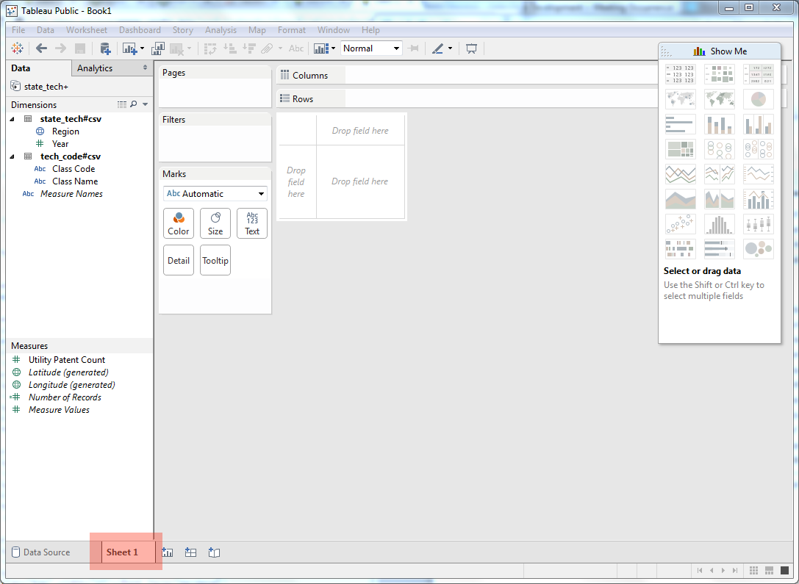First things first, let's rename 'Sheet 1' to 'treemap'. Our visualization will consist of this worksheet as well as an additional worksheet for the bar graph. Now let's take a look at the screen. On the left side, we find our column names (as well as some extra fields in italics, which for the purposes of this tutorial we can ignore) organized into two different categories: Dimensions and Measures. Put simply, a dimension is a field that identifies a piece of data, whereas a measure is a field that tells us, quantitatively, something about that data. So, 'Region Name' identifies a row of data as referring to a given region (such as Alabama), whereas 'Utility Patent Count' gives us a quantitative value for that row of data. Tableau will attempt to infer which fields are dimensions and which are measures, but sometimes it requires some adjusting. In this case, Tableau correctly identifies the 'Region', 'Year', 'Class Code' and 'Class Name' as dimensions, and 'Utility Patent Count' as our only measure. That is, 'Region', 'Year', 'Class Code' and 'Class Name' identify the scope of a particular row of data (or, in the case of Class Name, provide additional data on another dimension), and 'Utility Patent Count' represents a value for that scope.
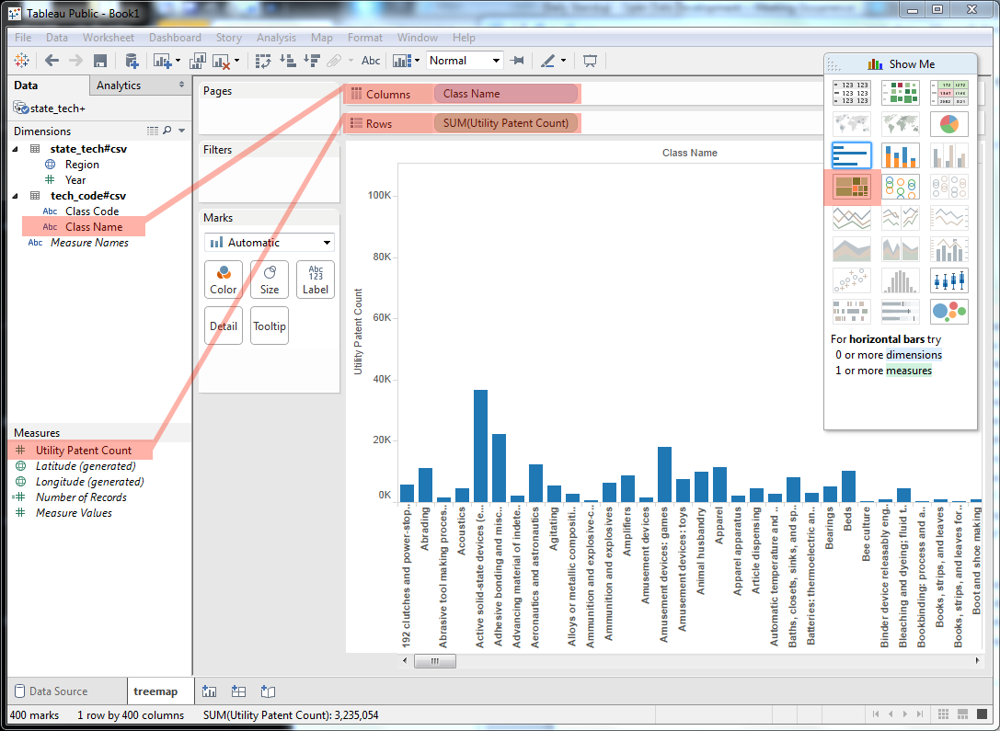But we want a treemap, not a bar graph. The answer is the Show Me menu on the right. Tableau supports switching between multiple different styles of graph with a single click, as long as the number of dimensions and measures involved are compatible. In the Show Me menu, click the TreeMap square (fourth from the top, on the left).
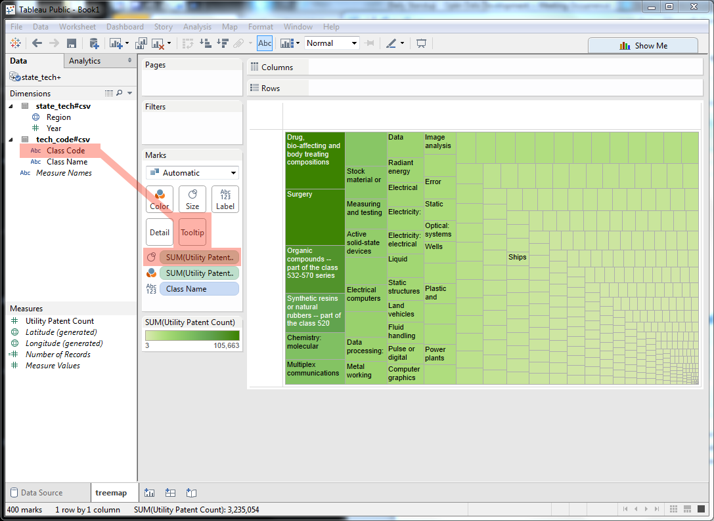Presto! Tableau moved the Utility Patent Count and Class Name pills from the Columns and Rows rows at the top to the left under Marks. In this case, we could have built the treemap by configuring these items ourselves, but the Show Me menu offers a convenient shortcut.
One last thing: Tableau creates a default tooltip using the measures and dimensions involved in the worksheet, but we want to show two additional data items: The class code and the ratio of the patents for a technology class for the total. First, drag the Class Code pill onto the Tooltip square (in the Marks section). Mouseover a square in the treemap and observe that the class code was added. Next, right-click the first Utility Patent Counts pill in the Marks section (with two colorless squares to its right) and select Quick Table Calculation -> Percent of Total. The tooltip now includes the class code and percent of total for a given square. To re-order the tooltip rows to match the original visualization, click the Tooltip square in the Marks section and adjust manually.
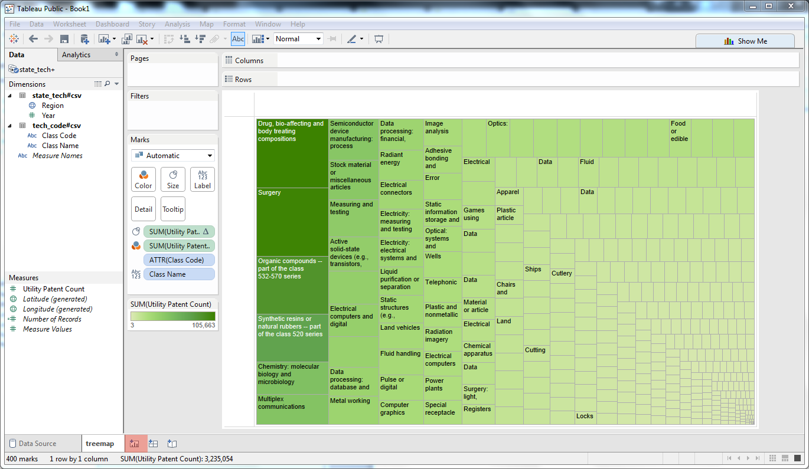Now let's get started on the line graph. Click the button directly to the right of the treemap tab on the bottom of the page to create a new worksheet and rename it 'line.'
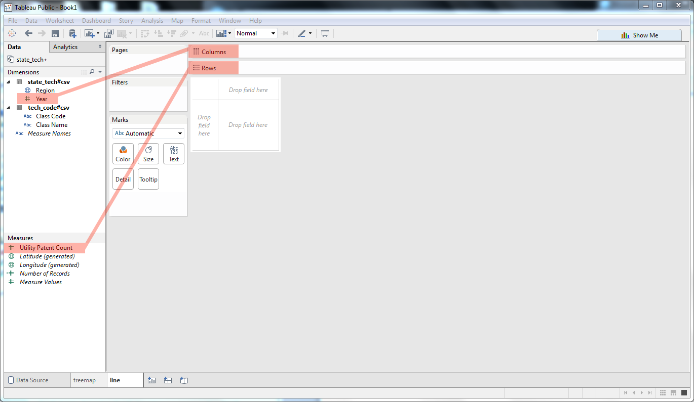For this graph, drag Year to Columns and Utility Patent Count to Rows. Finally, right-click the row header on the right of the graph (labeled 'Utility Patent Count'), select 'Add Reference Line' and press OK. By default, this creates a reference line based on the Average of the Utility Patent Count measure, aggregated by sum for a given year. To have the line appear dashed instead of solid, we can right-click the reference line itself and select 'Format.' This opens the Format menu for the reference line on the left side of the screen. Open the 'Line' dropdown and select the dashed line. Finally, deselect the reference line by clicking an empty space within the line graph. Your graph should look like this:
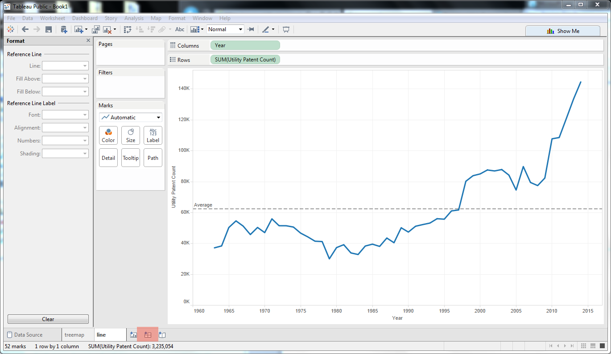Now we can start putting these components together into a complete visualization. Click the second button to the right of the line tab at the bottom of the page to create a new dashboard, and rename it 'main.'
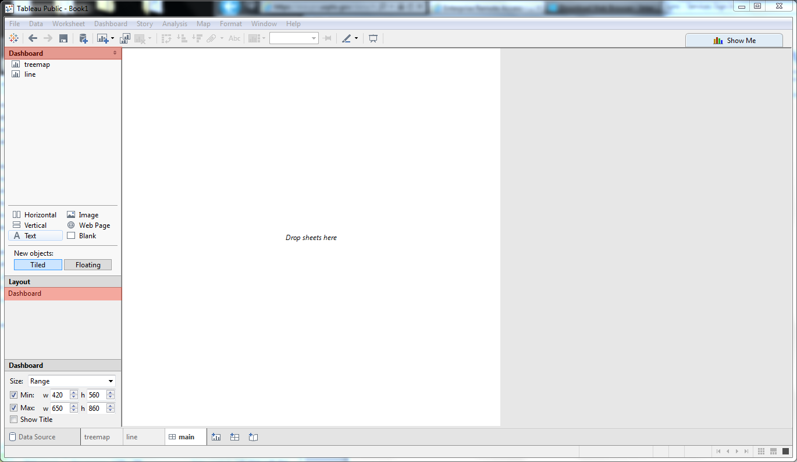On the top left, we see a Dashboard section, with a row for each worksheet we created. In the middle is the dashboard pane. Drag the treemap row onto the pane, then drag the line row below the treemap sheet. As you drag a component onto the pane, a gray box will show you how it will be oriented. You want the gray box to be below the treemap component, not to either side. Your dashboard should look like this:
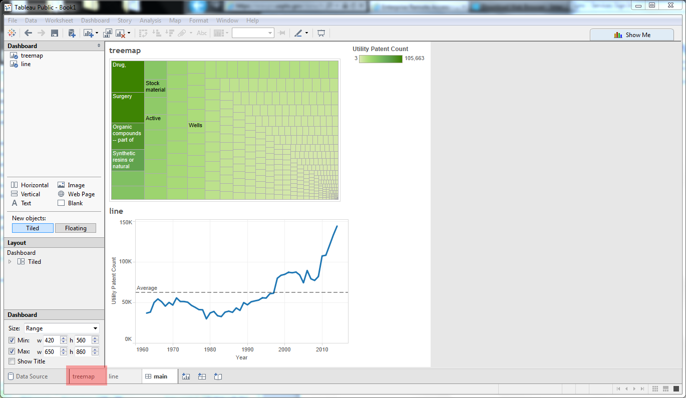Looks good, but we're not done yet! We want to allow the user to filter based both on State and Year, but we're currently showing aggregations for all values, regardless of State and Year. To accomplish this, let's return to the treemap worksheet. First, let's create the Year filter. Right-click the Year row in the Dimensions section and select 'Show Filter'. Tableau adds a filter control that defaults to the full range of years. If we wanted our dashboard to default to a particular range of years on load, or to exclude certain values in the final product, we can set these bounds to anything we like. Let's leave it at the default.
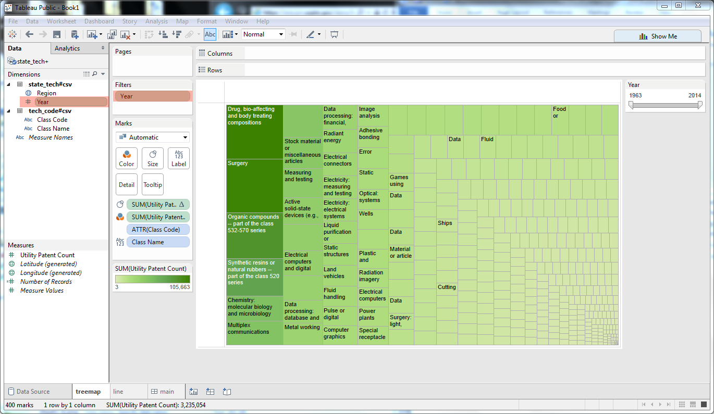Right now, this filter only applies to the treemap worksheet. To apply it to the line graph as well, click the arrow in the upper-right section of the new Year filter control and select Apply to Worksheets -> All Using This Data Source. If you return to the dashboard, you'll find that the filter doesn't show up yet. The simplest way to refresh the dashboard is to drag the treemap component off the pane (removing it from the dashboard), then re-add it to the top of the dashboard. The Year Filter will then pop up. Drag it around a bit and confirm that it affects both the treemap and the line graph.
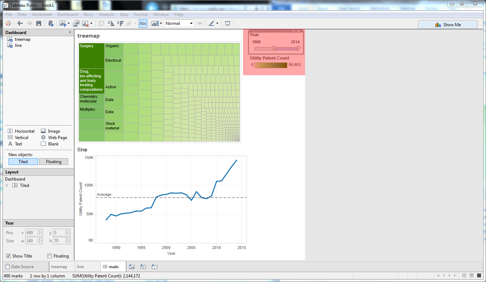Now for the Region filter. Return to the treemap worksheet, right-click on Region and select Show Filter. By default, Tableau creates a multi-checkbox filter. Let's adjust the Region filter component: click the arrow in the upper-right of the Region filter and select 'Single Value Dropdown'. Now we can select a region and see the technology class breakdown for that particular region, or select the '(All)' value in the dropdown to clear out the Region filter. For now, let's set the default to '(All).' And, as before, we need to tell Tableau that we want this filter to apply to other worksheets using the same data source: click the arrow in the upper right of the Region filter and select Apply to Worksheets -> All Using This Data Source.
Now let's go back to the main dashboard and refresh the treemap component by dragging it off the dashboard pane then dragging it back on. Drag the year slider around and set the Region filter to other values to confirm that it all works.
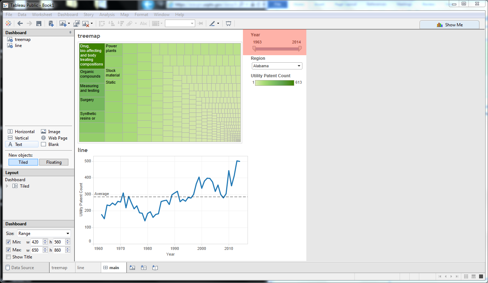Looking great! There are some additional tweaks we could make, such as resizing the dashboard using the Dashboard section in the lower-left of the page, and either hiding or renaming the worksheet titles to something more meaningful than 'treemap' and 'line,' but making these changes is straightforward. When you're ready, select File -> Save to Tableau Public to start the publication process to the Tableau Public profile you created earlier. You'll receive a log-in prompt for Tableau Public, then an opportunity to rename your workbook. Once saved, Tableau Public will open in your browser, and you'll find the result of your hard work! Your visualization will be publicly available at this point. If you want to share your visualization with other people, either with a direct link or embedded into your own web page, check out the Share button on the bottom-right of the visualization.
Exploratory Visualization
Now let's create the exploratory viz we showed earlier, which allowed us to compare states by technology class. We'll use the same data that we pulled for the previous viz, so there's no need to write any more code. First, let's start up a new instance of Tableau Public (or select File -> New). Follow the join steps for the previous visualization, joining state_tech.csv to tech_code.csv. No additional data steps are needed. Once that's done, create a new worksheet and rename it to 'bar'.
For this vis, we want to display all regions for a selected technology class, sorted in descending order by patent count. First, drag Region to Columns and Utility Patent Count to Rows. This will create an unsorted bar graph, summing all patent counts across all technology classes. To sort the graph, mouseover the column header on the left and click the sort icon above the header text. This will, by default, sort the bars in descending order. Next, we want to allow the user to select a USPC class to see the results for that class. We could drag either Class Code or Class name to the Filters column, then Show Filter. However, the Class Name field doesn't include the Class Code, and the Class Code field is unreadable (unless you have the USPC codes memorized!). What we want is a combined field. To create this, right-click the Dimensions tab and select Create Calculated Field and name it 'Combined Class Name'. Then, insert the following text:
This will combine the class name and class code into a single field. Now drag Combined Class Name to Filters. In the Filter dialog that pops up, select the 'Use All' radio button and click Apply. Next, right-click the Combined Class Name pill in the Filters dialog and click 'Show Filter.' Then, click the arrow icon in the top-right of the filter tab (the multiple checkbox list on the right) and change the checkbox list to a single-value dropdown. Finally, let's add a Year filter. Drag the Year pill from the Dimensions tab to Filters, right-click the pill in Filters and select 'Show Filter' and press OK.
And that's it! With just a few drag and drops, and a bit of configuring, we have a simple state comparison graph for any given technology class. We could use this viz as-is to explore a given technology class for any unusual state dominance (hinting toward further analysis), or we could expand it further (perhaps with a ratio in the tooltip of the state's share of the total patents the selected class). Also, because we combined the Class Name and Class Code into Combined Class Name, we can search a given USPC code within the filter in case we know which class we want by its code. Tableau makes it easy to dynamically explore data by way of visualization creation, and then share the results with others.
If you liked this tutorial and would like to see more visualizations using USPTO data and Tableau Public, please visit the USPTO Developer Portal. We'd love to hear from you and see what you've created!